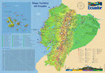

De: La Frikipedia, la enciclopedia extremadamente seria.
De: La Frikipedia, la enciclopedia extremadamente seria. De: La Frikipedia, la enciclopedia extremadamente seria.

|
Este artículo necesita ser ilustrado. Busca una afoto en nuestro depósito de imágenes o donde sea y ponla, pero que no sea pr0n, que se cabrea el señor del adSense y nos corta el grifo de los dólare. Y sin dólare no hay servidor... |
| De la serie Países del planeta tierra: | |||||
| El Ecuador | |||||
|---|---|---|---|---|---|
| |||||
| Lema: All you need is Ecuador | |||||
| Himno: Media:Ejemplo.ogg
| |||||
| 
| |||||
| Capital | ChiQuito | ||||
| Mayor ciudad | Guayaquil (población penitenciaria) | ||||
| Lenguas oficiales | Español,quichua,ingles,chino(por tanto chino y gringo que hay acá) | ||||
| Gobierno | Monarquía constitucional, dictatorial legalizada, Yanky | ||||
| Presidente | Rafael Correa | ||||
| Área | Latinoamerica | ||||
| Población | Catorce millones in situ y otros 4 regados alrededor del mundo (muy especialmente España) | ||||
| Moneda | Dolar Estadounidense... Bien estábamos con el Sucre | ||||
| Zona horaria | UTC-05:00 | ||||
| Dominio Internet | .com.ec | ||||
| Código telefónico | +593
| ||||
| Un país megadiverso en todo, hasta en payasadas | |||||
Ecuador es un país chiquito, y es que los peruchos les han robado tanta pero tanta tierra que ya casi no se ve en el mapa. Cuenta la leyenda que alguna vez tuvo salida al océano Atlántico. Sus principales recursos naturales son el banano, el alcohol adulterado y el espectro electrofotogénico de la cara de Rafael Correa. Es un país multiracial en donde viven: indios, mestizos, blancos, negros, longos, monos, gnomos, hippies, etc .
Ecuatorianos: gentilicio, que viene de Ecuador
Algunos seudónimos que se utilizan para identificarnos por región:
Ecuador es un país con muchas riquezas y bellezas, por lo tanto esta condenado a ser pobre por el resto de sus días. Se ubica en un hueco que han hecho Colombia y Perú, y en el mapa aparece como un niño entre dos viejas gordas. Es un país tan pacifico (bueno no tanto porque ya ha aprendido a ser violento), que todos los países se le abusan y le roban territorio.
Ecuador tiene tres ciudades importantes: Quito, Guayaquil, Cuenca.
Mujeres: Se dice que las mujeres mas guapas y buenas son las manabas (de la provincia de Manabí en la Costa), las mejor proporcionadas son las guayacas (de Guayaquil)y las más lindas de cara son las cuencanas (de Cuenca).
Hombres: No hay mucho que decir la mayoria machistas y borrachos uno que otro mandarina de cáscara gruesa... de todo un poco...
En Ecuador hay playas... bastantes... Como Salinas, que si no fuera por que todos los cholos corren para aya en feriado seria un mejor lugar de lo que ya es, muchos edificios. Y Montañita que sirve si quieres pasar una velada romántica y disfrutar de drogas y europeas drogadictas. Pero el mejor lugar es la chocolatera, se llama así porque en tiempos de La Colonia, los capataces tiraban a los negros a ese acantilado.
La Sierra está lleno de montañas y paisajes muy chéveres pero nadie casi se digna a visitar por que hace un frío del carajo y normalmente cuando subes a la altura te dan náuseas y mareos o soroche.
El primer presidente ni siquiera fue ecuatoriano, el segundo si lo era pero decían que fue un mangoneado del primero que termino siendo también el tercero. Después algunos presidentes más y luego una época en que la gente se canso de tanta tontera de gobernantes que durar mas de una semana al poder era un verdadero récord Guinnes, incluso hubo una mujer (la primera mujer presidente del Ecuador) que duro solo un día al poder. Aquí también mataron a un presidente a machetazos y a otro lo arrastraron sujetándolo de la barba a caballo (barbaría).
Posteriormente hubo un tipo que ademas de chorear(robar) también en todo caso nos divertía. Se llamaba Abdalá Bucaram, bailo el rock de la cárcel disque para recojer fondos para los niños pobres y canto con un grupo uruguayo de pop de mierda pero que cantado por él era lo mejor que podías ver en tu televisor. Vean cómo la nación se mantiene después de las paridas más cómicas de la televisión del viejo oeste. Abdala bailando el rock de la cárcel. También le terminamos tumbando.
Luego llegó otro presidente menos pintoresco pero más feo, se llamaba Lucio Gutiérrez, que dicen que era tan feo, tan feo, que su mamá le acariciaba con un repelente , y que el doctor del hospital pensó que era una babosa con nariz. Fue el primer gobernante izquierdista... igual le tumbaron y se la saco (huyo) en helicóptero.
Ahora luego de múltiples presidentes derrocados, ahora tenemos uno que a conquistado al país con una sonrisita. Es un izquierdista con un gran amor hacia las filosofías revolucionarias cubanas, a creado algo llamado la revolución ciudadana con la frase: "La patria ya es de todos"... Que se mas podemos decir, a algunos le agrada a otros no... Degusta de decir frases como "Gordita horrorosa" y "presa corrupta" y es capaz de hablar mas de 4 horas sin parar en las cadenas sabatinas (Increíble, pues créalo...). La lucha dada por la oposición al tratar de derrocarlo es una verdadera diversión para todos (comentario neutral).
Al inicio era el verbo... luego llegó Correa y se acabó la historia del Ecuador. Aunque dígamos que al inicio habían los "quitus" que eran unos indios que no tenían gracia y capaz que se morían de hambre si no se encontraban con los Incas, el caso es que llegaron los Incas y un Inca le dio trámite a una india Quitu y decidieron hacer una alianza (no como la Alianza País, los Incas eran mas inteligentes), luego de eso se pasaron follando durante largos años hasta que un indio bruto, perdón, un indio brujo, pronosticó la venida de los españoles diciendo que eran unos hombres barbudos, así que los indios pensaron que eran los Talibanes y corrieron y nunca mas se volvió a saber de ellos hasta que uno de ellos fue encontrado en Viña del Mar cantando la canción de las Torres Gemelas. Aunque debo aclarar que se quedaron unos pocos indios, que no les quedó otra que aparearse con los españoles porque sino les daban palo(golpeaban) o el vire(mataban),y de ahí salió una raza extraña, que a los pocos años se reprodujo como conejos, llamada raza mestiza. Fue entonces que los españoles empezaron a torturar más a los indios para que les digan en donde esta enterrado el tesoro de Atahualpa, pero nunca lograron saber porque el único indio que sabía (llamado Rumiñahui) prefirió cortarse la lengua para no decirles donde, aunque muchos historiadores sostienen la hipótesis de que se cortó la lengua después de ver a Rafael Correa hablando en cadena nacional. Luego de muchos años de yugo español, un grupo de patriotas nos dieron una patria pagando su vida, o sea, sacaron a los españoles a palazos quienes salieron corriendo como alma que lleva el diablo... se las cobraron los gobiernos de turno y empezó la famosa historia pintoresca del Ecuador, unos ponían, otros sacaban, otros jalaban, se mataban... y a final de cuentas... naranjas. Los costeños ni se sabe de donde salieron pero no se parecen a los serranos.
- Chupar (Enborracharse) "Considerado Patrimonio Nacional del Ecuador"
- Tumbar presidentes
- en Guayaquil es farrear y gastarse toda la plata de las quincenas rumbeando...Pero a la mañana siguiente aparecen botados en La Perimetral choreado por las dulce sueños.
- En la bella?? ciudad milenaria de Quito existe un deporte muy singular de bajo riesgo que se llama gringuear. La cancha de juego es en la mariscal (zona rosa de Quito). Alli te puedes levantar gringas promiscuas. Cuidado te pasen el sida. Si tienes suerte te invitan a comer y a drogas. Si eres indigena o negro es mas seguro ke seras exitoso en este deporte. Pero puede ser que fracases y entonces te calzonean (te enamoras).
- Los quiteños tienen como hobbie quemar a la gente, y cuando no queman a la gente están en la plaza de toros con un florido vocabulario español y su nariz de Atahualpa hablando cosas como: ¡Joder tío! Habéis vizto un olé parecido en toda tu vida... ¡me cago en la leche! Es un deporte que ha calado hondo en la cultura quiteña, es por eso que TODOS los quiteños quieren ser toreros. Torero: Dícese de la persona que tiene por oficio poner bravo a un toro que nunca le ha hecho nada.
- Los sábados en la mañana, el hobby de todo ecuatoriano es levantarse a ver por cadena nacional la sarta de pavadas que habla Rafael Correa,y no se puede ni cambiar de canal porque es cadena nacional :(lo peor de todo es que nunca falta el indio cholo nivel 1000000000 que le traduce al quichua todo lo que dice...) - los domingos son de fútbol y peloteo
Plan de conquistar Perú y recuperar el territorio Ecuatoriano, dar por culo a los colombianos pero la mayoria se ahueva, y por eso no hace nada. Ademas de los hippies que andan fumando promulgando la paz.
Por ser un país "hyper super mega diminuto" para 2056 preparan la llamada "tormenta de la selva" que es ir y arrasar con Perú, Venezuela, Brasil y todo lo que este a su paso con avionetas equipadas con la ultima tecnología lanza petardos. la expansión..
Otro proyecto menos conocido por el resto del mundo salvo por Ecuador consiste en apoderarse con un conocidísimo parque en la El Retiro dejará de ser español para convertirse en ecuatoriano para el año 2008. Actualmente, hay grandes asentamientos los fines de semana, concreta mente un 95% de los visitantes del parque en dichos días es de Ecuador.
Otro proyecto secreto que todo el mundo conoce es el que plantea el presidente Correa, el proyecto secreto se llama "Socialismo del Siglo XXI" que consiste básicamente en aislar económicamente al Ecuador de todos los demás países.
Si estás en Ecuador tienes que recordar esto:
Monos: Así se les dice en la sierra a los de la costa. Especialmente los de son Guayaquil o los guayacoshhhh. Cuando van a Quito es a veces fácil identificarlos porque andan muy abrigados estan tan acostumbrados al horno de la costa que un poco de frio los deja tiezos al punto de darle hipotermia a los hptas. Los más de la calle (clase baja), te meten la "sh" en todo lado. Por ejemplo por decir "me voy al parque" dicen "me voy al parqueshhh". Lindas playas. El 60% de estos especímenes son seguidores del Barshelona S.C., un 40% del Emelec, el 17% restante se lo disputan el resto de los equipos de la Costa que prácticamente son inexistentes, y a muy pocos no les gusta el fútbol, pero lo gracioso es que muchos son peloteros y se dicen amar a sus equipos pero solo van a los estadios 2 o 3 veces al año. En Guayaquil Los monos tienen por costumbre comer encebollado en cualquier esquina, a menos de una lata (1 dolar) La mayoría son farreros y el 90% de lo que ganan de su trabajo les gusta gastar en farras y chupa, son capaces de estar 2 o 3 días en diferentes discotecas. Se amanecen chupando por cualquier cosa. Tienen por hobbie chupar biela (beber cerveza) a cualquier hora del día y mas aún si los ves afuera de una casa usando las jabas (paquetes de botellas de cerveza) como asiento, jugando naipes y con el parlante afuera escuchando salsa, vallenato y música corta-vena, los hombres en su gran mayoría son cachudos (los que han sufrido infidelidad) o ya han pasado por eso alguna vez en sus vidas Los monos más aniñados (de clase alta) de Guayaquil solo conocen el centro (para trabajar) y Samborondón (el resto de su tiempo se la pasan en otros paises especialmente Miami, New York), los monos batracios (de clase baja) quien sabe de qué vivirán y salen a cada rato en el programa "en carne propia" y ni los vean porque más feos no pueden ser. Los monos aman su ciudad pero a la vez reniegan de ella de por qué hay tanta gente mal trip.
Esmeraldeños: Usualmente negros o mulatos, bailan salsa bacano y han conquistado el puesto de gringueros en la mariscal (zona rosa de Quito) porquelas gringas y las europeas siempre vienen a ver cosas exóticas. En Guayaquil son expertos sirviendo encocado de pescado pero en su gran mayoría van a vivir a zonas marginales. Si quieres conquistar gringas en la mariscal de Quito es muy recomendable comportarse como ellos aunque, si eres de ojos claros o medio rubio capaz mejor ni lo intentes, ellas vienen a buscar cholos y negros. Los negros en su mayoría saben jugar durísimo fútbol, y en Esmeraldas se la pasan durmiendo en hamacas y tocando marimba, trabajar para ellos es un logro importante en la vida y cuando hablan siempre te dicen "ay ve" "vea hijito" "se me jué" me voy pa' la rumba o cosas así.
Indígenas o Serranos: La población absoluta de Quito y de toda la Sierra Se los ve mucho en Quito, populares con las gringas . Los de Otavalo son con más espíritu protestante como diria Max Webber y así le dan duro al comercio especialmente al vender cobijas (hasta se van a Colombia). Por ejemplo recientemente les ha dado por comerciar con la guerrilla colombiana de las FARC. Los de otros lados de la sierra pues mucho mas chiros (pobres, sin plata etc en ecuatoriano) aunque se pegan unas chupizas (borracheras ) de muchos días como ni se imaginan. Los principales aliados de los Quiteños para tumbar presidentes. En la costa se los identifica porque habiendo unos cuarenta grados, andan abrigados como para sobrevivir el frío del Polo Norte y siempre llegan un guagua (bebé) en la espalda.
Pastusos: Estos son el equivalente de los gallegos en españa, osea el blanco de chistes por digamos "distraidos". cuando se les pregunta que porque son tan alcohólicos dicen que es por el frío que allá si es insoportable la verdad. En realidad Pasto es territorio robado por los colombianos.
Cuencanos: Provenientes de Cuenca, la "Atenas del Ecuador", también conocida como la capital mundial de Zhumir, la ciudad más Hermosa y aniñada del Ecuador, dicha la capital del rock porque de hay viene música de lo mas heavy. Cuenta la Historia que el Gil Ramirez Dávalos al llegar a fundar el pueblucho mandó una carta al Virrey diciéndole que en Cuenca no todos han sido malos, también han habido algunos Corderos, Crespo, Toral, Corral. Ahora el cuencano está extinto todos son indios que se han instalado en la ciudad con el dinero de sus familiares que se han ido a la yoni. Tienen el acento mas gracioso del ecuador (si los escuchas hablar una sonrisa no puede escaparse de tu boca). Son bien curuchupas(religiosos), las hembras más buenas, guapas, mojigatas y borrachas del país (aparte de las guayacashhh), si te vas a una fiesta y no cojes, eres maricón, o no eres cuencano. Son los más aniñados del país, fuman, chupan, tragan, se emplutan, cogen, todo lo que puedas pensar, una ciudad pluricultural y de oportunidades para cojer muy fácil. El cuencano a desarrollado la habilidad de rumbear desde el viernes has las primeras horas del día domingo, pues asisten a la iglesia para calmar su consciencia de la noche anterior, aun los científicos no se explican como es posible que tomen de lunes a sábado y lleguen a la misa puntual el domingo.
Azogueños: Capital del area 51; le caen mal a Correa, por eso no les asigna ni medio; en esta dichosa ciudad se dio una fuerte manifestación en el gobierno de Yamil Maguac porque los azogueños al enterarse de la dolarización quisieron cambiar el nombre de su ciudad por Nueva York, . Otro de sus gloriosos días fue cuando ellos pelearon orgullosamente porque querían que la linea equinoccial pase por su ciudad ya que querían evitar el gasto por los cordeles de ropa. Honrosa ciudad donde se ven letreros como "A lado venden gas" o "se pintan casas a domicilio". Se ponen comentarios en el fasebuc "como los mas guapos de azogues" o "como los mas guapos de la provincia".
Manabas: Los del patacón, el peshcao (atun, percebes, etc). Los hombres se dedichttps://i.ytimg.com/vi/f9mnxfO_KYk/default.jpgan a sentarse al frente de sus comederos, alzarce la camiseta y mostrar su atributo de barriga cervecera. Ahí no existe la coca cola, solo hay la 'esprai, pecsi o trpical'. La doble L no se ha registrado en su léxico, cualquier palabra con doble L es reemplazada por una Y.
Loja: Eso ya creo que es Perú con pequeñas colonias gringas en un sitio llamado Vilcabamba, se dice que aquí la gente tiene un carácter extraño con rasgos bipolares, también se dice el mito que las mujeres les pegan a sus esposos y que la gente es muy berraca, sobre todo en Macará, pero eso dicen porque la gente normal no visita esas tierras tan lejanas. Lo bueno de este peculiar lugar es que la gente habla sin cantar, sin quejarse, sin agregar o quitar letras a las palabras.
Machaleños: Pueblo chico e infierno grande, una ciudad muy rica y también con más moteles por kilómetro cuadrado de Ecuador, y son muy lujosos (tipo Las Vegas). El que viene a Machala y no se lleva una hembra nativa a un motel definitivamente no conoce Machala, también existen muchas discotecas y delincuencia, este pueblo vive del banano, del camarón, de la minería, de los motelesy el narcotrafico etc.
El Oriente: Full selva. solo llueve y hay full insectos. Ni dios ni ley. Antes inclusive cuando venían los gringos los indígenas les hacían chuzos (carne en palito). Capaz hasta les redujeron la cabeza. Igual los curas españoles hechos los que disque vienen a evangelizar también pagaron piso (se les dio vire) (matarile).
Galápagos: Lugar restringido para los ecuatorianos por lo caro. Ahora si son del "primer mundo" y vienen acá seguramente si tendrán chance de poder ir allá. Igual hay demasiados Gringos. En galápagos están los animales más raros que has visto en tu puta vida extraños del planeta, pero a los gringos les encantan, ver esos bicharrajos les provoca placer sexual y les levanta el libido a las parejas extranjeras especímenes (Principalmente viejas guarras) que viene a visitar.
Cañar: Es el área 51 del Ecuador, nadie sabe como coño será.
Quito: Es una pequeña aldea, aburrida y monótona con un frío tremendo de los Andes, destacada por la "belleza física" de su gente y hay harto Gringo. Últimamente están llegando también cosas como chinos o cubanos, tambien españoles por suerte no Canis. Esos porfa que se queden allá nomas aunque la verdad nuestros regetoneros parece no son tan ridículos creativos como sus canis. talves el mejor Botellón (como dirian en España) de todo el mundo especialmente en fiestas de Quito. (como dirian en España) de todo el mundo especialmente en fiestas de Quito. Perdón si estoy dando fama al Ecuador de país de borrachos....¡Viva el trago!. Últimamente full colombianos con los cuales te puedes fumar una deliciosa marihuana en la calle, eso si no te roban o quiebran antes... ¿ven? no solo somos borrachos. También ciudad muy rebelde, ya vamos tumbando tres presidentes. Cuando estabamos tumbando a Lucio Gutierrez recuerdo como una española que estaba con nosotros en las marchas para tumbarle dijo algo como:"Oshtia tío como esh que zolo marchando pueén tumbar un prezidente"; a lo que nosotros respondimos: "Ya entendemos porque ustedes todavía tienen monarquía y se aguantaron a un hijoeputa como Franco".
Según los quiteños son bien cultos y educados pero apenas miran un mono (si es de Guayaquil peor) ya lo desprecian y lo quieren fuera, según ellos no son regionalistas pero muy dentro de ellos quisieran que Guayaquil no sea de Ecuador. Lo único bueno de ellos que en su mayoría tienen buen gusto por la música, por eso es que las bandas musicales más reconocidas van a Quito a dar conciertos (a diferencia de Guayaquil que si no es reggaeton o salsa no es música). Los quiteños que viven al norte son los más aniñados (de clase alta) y sólo conocen ciertas partes de Quito (obviamente tienen que ser aniñados) y los que viven en el sur de Quito ni hablar.
Guayaquil: es una gran ciudad con calor del mas hpta, los guayacos son muy pilas son los mas abispados de Ecuador solo no saben apreciar muchas cosas y por eso terminan valiendo, ultimamente esta un poco peligroso pero segun Correa "SON TIEMPOS DIFICILES PARA LA DELINCUENCIA" pero los indices de secuestro express andan como loco, ni los turistas se salvan. Tiene un alcalde que pasa quejándose de que no le dan dinero, si esa ciudad es la que más recibe del estado, creen que todas las industrias y empresas están ahí, bueno, pero son muy amigables y buenas gentes, solo no confíes mucho en ellos, porque cuando pueden te sacan la billetera y si está vacía te meten el macheteshh. Hay que reconocer los esfuerzos por mejorar el nivel de cultura en esa ciudad, (por eso creen que son blancos escandinavos mezclados con extraterrestres). Odian tanto pero tanto a los quiteños por ser la capital, que si asoma en Guayaquil un carro con placa de esa ciudad... mejor ni les cuento el resto.
Manta: Bonita playa pero ¡Uy!, allá si los gringos si estaban bien metidos, tenían una base militar de EEUU.
Alausi:' Se dicen que tienen la nariz del Diablo, pero es una verga de montaña ondulada que esta en Tolte, Adoran al san francisco, y existen unas viejas chismooosasss de a verga. Es la ciudad con menos poblacion de veteranos del Ecuador, Las mujeres son simpáticas, aunque solo tienen carita y de ahi tienen un cuerpo flaco, desnutrido, que parecen no han comido en años, eso si cojen bien, pero son unas putas de a verga, mojigatas, chismosas, habladoras, pero cojen rico. En cambio los huambras andan peleando con otros huambras de otra ciudad cercana llamada "Chuchi" "Chunchi" "Chucha" que a la final es la misma verga de Alausi, Estos dos pueblos andan peleando, pero bien que se andan muchando, viceversamente.
Abunda la gente ignorante que escucha reggaeton y tecnocumbia (por eso las bandas famosas cuando hacen giras por Sudamérica siempre se saltan Ecuador) y que sólo piensa en bailar, musica rokolera para chuparte la plata (desperdiciar tu dinero en enborracharte). En la sierra albacito y san juanito. Nunca apoyan al talento ecuatoriano por más que salgan artistas y bandas que sí valen la pena, pero bueno que se puede hacer. En Esmeraldas marimba esmeraldeña. Si quieres ser Emo puedes escuchar pasillos o yaravies para llorar que te calzonearon (te enamoraste perdidamente) y decir que te vas a suicidar. También hay mierdas pop (en su gran mayoría pero ni aún así son populares) y rock (lo único medio bueno). Si quieren ver una buena psicodelia andina chekear delfin hasta el fin (ver con cuidado, te puedes terminar quedando como Syd Barret de Pink Floyd despues de ver este video). Bandas de pùeblo para chupar y zapatear bastante sobre todo en las fiestas populares de la sierra y en fiestas de Paysanolandia Quito. E Aunque aun quedan algunos Heavys verdaderos que estan en guerra permanente ya que los rejetoneros, floggers, bachateros, jonaticks (Jonas B), belibers (J Bieber), emos,etc. Se apiñan en cualquier lugar. Se defienden con los diferentes estilos de pelea(por las diferntes divisiones del metal) en Quito algunos: Power Metaleros caballeros ya sean Paladines u otros con su espada y escudo o un martillo gigante con rayos, fuego, etc; Death o Black Metaleros ya sea invocando su ejercito de muertos o pelando como autenticos Death Knights.
En Guayaquil ni hablar allá no existe la música buena, el 90% de los guayacos escuchan reggaeton, bachata y salsa (no digo que la salsa sea mala pero escucharla a cada rato ya cansa hasta en las busetas) y solo piensan en bailar y farrear, el resto puede saber algo de música pero aún así como que nada que ver. Un guayaco culto en música nunca disfrutará de un buen concierto en su ciudad porque todas las bandas famosas se van a Quito (y si es que van). Los pocos rockeros y heavys que hay solo gustan del metal extremo (si no es mosh, black, death y grind no son ellos) y 4 personas son punkeros (bueno 3 porque uno ya se cansó de que no existe buena música y se hizo farándula), 2 personas en Guayaquil escuchan reggae jamaiquino y ska y solo a 1 persona le gusta el blues en todo Guayaquil.
En manta tiene su buena vibra del rock, y salen buenas bandas últimamente
Las castas en el Ecuador son mas o menos así:
Aniñados, pelucones o clase alta: También bautizados por Correa como pelucones. Hay en Quito y en Guayaquil. También unos pocos en Cuenca, en Riobamba y Machala. Estos últimos y los de Quito (110% de población blancos) son dados a mas españoles que los españoles, ole. Vieran los payasos en las fiestas de Quito en las corridas de toros. Se mandan a traer cantantes de flamenco de España aaahhahaha que yo soy gitanooooo y toman vino con bota. No arrastran la erre sino les diran longos. Por un lado se hacen los curuchupas (católicos) y por otro tiran (fornican), jalan cocaína, fuman la maria, son gays, lesbianas, etc. Hay versiones de niños pijos, fresas, gomelos, etc. Como les dicen en otras tierras. Hay también Pijopunk y otros dados a alternativos que igual gastan plata y creo se limpian los mocos con billetes de 100 dolares. También a demás de españoladas les encanta las gringadas. ojala se fueran todos a España y a Miami.
clase media, medio aniñados, tirados a pelucones: quieren ser aniñados, se dan muchos gustos pero viven endeudados hasta el cuello y los colombianos churqueros se aprovechan muchas veces de ello, no son lo suficientemente adinerados ya que les gusta darse demasiados lujos y desperdician el dinero
Chiros o batracios: la mayoría. en la costa viven en casas de caña. como dijo una ves Abdala Bucaram "en los suburbios de Guayaquil, si se mea un perro se inunda". en la sierra muchos son indígenas y viven en chozas. todos igual de jodidos. en la costa y cada ves mas en Quito full pandillas. les gusta el regeton y tecnocumbia. para cuando están tristes bolero rokolero chupate la plata.puedes ver a la clase baja todos los dias en su ambiente natural en un programa llamado "en carne propia" conducido por Jose pepe chalen o Jose Delgado mas conocido como EL CHOLITO.
Cuando tratas de ayudarles salen con que "YO NECESITO AMOR, COMPRESIÓN Y TERNURA"
Colombianos:Abundan, se dice que hay más Colombianos que ecuatorianos en Ecuador, ya que el 80% de Ecuatorianos emigró a España. Eso si estan buenas las colombianas pero muy putas nada que ver con las mojigatas dignas de las ecuatorianas.
Peruanos: La bolisisísimas, un montón, en Cuenca, El Oro y Loja. Cuando llegas a Cuenca y no vez algún perucho es porque te has ido a la Cuenca donde estan los cuencanos tirando a españoles. Trabajan en todos los trabajos que los ecuatorianos no quieren... (albañiles, barrenderos, basureros, agricultores, fumigadores en las florícolas). Importante para los peruanos les gusta que les den sus salarios en Alcohol etílico.
Chinos: Algunitos. creo que el chaulafan que venden es de carne de mickey mouse. La mayoría, tienen almacenes de 1001 babosadas, que parecen alhajas (bonitas)y novedosas, pero apenas las compras,ya se te dañan, te comes Verga y vuelves al poco tiempo... (Ni hablar de los autos que nos venden, baratos, y se les funde la máquina a los 3 meses!!!)
Gringos: a lot of tourists. otros se enamoraron del país y andan comprando full tierras. así mismo estában en la base de manta bacilandose a nuestras manabas los muy hijueputas. Cuando están en la mariscal en Quito se les cae con el gringeo y así puedes agarrar la sifilis gringa. Otros mas bien deciden chorearles (robarles) para así compensar el intercambio desigual entre el primer mundo y el tercero, ver samir amin. otros se pierden en la selva o en la montaña por andar hechos los de deportistas extremos. Igualmente les gusta visitar Ingapirca que es un montón de piedras que no tiene ni puta gracia el mas importante sitio arqueológico.
Arabes e indus: en la mariscal full, normalmente propietarios de locales de shawarmas y Pipas, a los que va la people pa chupar.
Curas españoles: algunitos. una vez unos que fueron disque a evangelizar a los indigenas de la selva y les hicieron carne en palito.
Ecuador cuenta con la banda ancha más lenta en el mundo, tiene una velocidad aproximada de 0,000046545 kbps
En la TV pasan pura mierda. El programa más conocido es "Combate", es un programa atrasapueblo donde hay 2 equipos naranja y azul y se enfrentan a unos cuantos desafios pendejos que cualquier minusvalido con desorden mental podria hacerlo mas rapido y mejor que esos cabrones solo lo ven los cholos del ais y los hombre babosos que solo ponen en ese programa por las cholas buenas que aparecen ahi y la Domenica Saporitti que esta como quiere "Vamos con todo" otro programa de prensa rosa que andan en la vida privada de personas disque famosas (ni los ecuatorianos mismos los conocen) Se ven muchas novelas mexicanas cursis que contaminan el medio ambiente y según dicen son la causa principal de cáncer al cerebro. Se da una cobertura exagerada al fútbol mas del 90% hablan del barcelona y sus múltiples intentos por no descender a la Berga. Los programas más vistos son : Bob Esponja, El chavo del ocho, Cantinflas, Doraemon, Los Simpsons, A todo dar, El Cholito, haga negocio conmigo y en carne propia que es la unica porma de que los aniñados vean la pobreza de ecuador de lejitos.
Y también pasan puras novelas de narcos colombiches que ya nos tienen los huevos hinchados.
En las noticias pasan solo muertos y violaciones. Parece que mandan a matar gente y después reportan el caso. En este punto vale la pena notar un diario escrito que se llama EL EXTRA en donde creo chorrea la sangre y tienes fotos gigantes full color de mutilados, violados, en la morgue, etc y esto junto a una mujeres lluchas (desnudas) que el 90% son meretrices colombianas. Adentro full chismes de gente disque famosa idiota. Resulta que creo este es el diario mas leído del ECUADOR.!!!!!!
Chupar: es el deporte más popular de los ecuatorianos (especialmente de los pachucos). Sólo se necesita un botella con el alcohol más barato que encuentres (mejor si perjudica la vista). El ganador es el que termina hospitalizado o muerto (si quedas ciego también ganas)
Ecuavolley: Deporte inventado por los albachos (albañiles). Parecido al volley pero se juega con tres personas por bando y el balón es más duro que la pinga de Chuck Norris. A diferencia del volley, en el Ecuavolley todo está permitido y es obligación decir "chucha madre" o "verga" cada vez que pierdes un punto. En estos partido se apuesta por lo general una jaba de cerveza, aunque también se apuestan a las esposas, a las hijas y sus casas.
Pelota Nacional: Deporte endémico de las zonas rurales del centro del país(Riobamba, Ambato, Latacunga, Colta,etc,etc,etc.) Se juega con un número considerable de miembros por bando, los cuales se arrojan una pelota de caucho que al darte en la cabeza, si no te mueres es porque chimbearon. Es el deporte que causa más muertes en todo el Ecuador.
En Riobamba(Friobamba) es el lugar donde más juegan a este deporte, en esta ciudad usan unas especies de raquetas de tenis para lanzar la pelota con más fuerza.
Futbol: Solo los de la raza negra son los que mas lo practican en Ecuador, Por eso en la selección solo constan negros. A los ecuatorianos les encanta el fútbol pero hay que llevarles a la fuerza para que vayan a los estadios porque prefieren verlo en los bares chupando o por cable. El club mas popular (del guasmo) es el Barcelona de Guayaquil, también llamado "barcecopia, barceloca, barceleche, etc". No se entiende porque diablos un equipo de Guayaquil se llama como una ciudad en España y como un equipo de allá mismo. Tampoco se entiende porque hay quiteños que son hinchas del barcelona, pero también existen hinchas de Liga en todo el país (recién se hicieron hinchas cuando quedó campeón la Liga en la libertadores, poquitos pero los hay y se siguen sumando gays ) . El rival directo del Barcecopia es el Club Sport Emelec o Emierdec, pitufos o millonarios. Emelec es el segundo más popular del país es un equipo que aveces juega bien y otras que vale pija le hace frente a barcelona pero en si los 2 equipos son una mierda cuando juegan es como ver a dos borrachos en la verga dandose manotones. este partido es mundialmente conocido como el "CLÁSICO DEl ASTLLERO" o "CLASICO DE LA BANANA". Los demás países le vuelan la raja en futbol, por eso no quedaron en el mundial 2010...shile se los cagó.
En Paysanolandia CHIquito y el Deportivo Cuenca(que es le único equipo arrecho del Ecuador) y otras cosas (PD: los pocos hinchas que existen del quito son solo placeras y taxistas (pero no todos)). Los militares tienen ekipo (pero no hinchada fiel) y también los chapas (policias, viene del quichua chapak).
Jéfferson Pérez
Antonio Valencia
Julio Jaramillo
Juan Fernando Velasco
Julio César el más malcriadito
Delfín Quishpe (terapia rejurgitoria)
LOS AÑOS VIEJOS: Quizás la costumbre mas reconocida a nivel mundial sea la quema de los Años Viejos, que se realiza cada año a partir de las 12 de la noche del 31 de diciembre. Según muchos historiadores, esta costumbre se remonta a los instintos asesinos de la gente que vive en Quito. Se dice pues que una horda (así se les llama a las familias quiteñas) de quiteños sedientos de sangre quemarón al Gral. Eloy Alfaro y sus amigos en plena plaza del Ejido, pero luego prohíbieron quemar a la gente, asi que los quiteños salieron a protestar (como siempre), pidiéndo que no les prohíban entretenerse, pero no les dieron chance, asi que para que no se pierda la costumbre de los quiteños (que consiste en matar gente y animales con el máximo sufrimiento posible), se inventó esta costumbre de hacer muñecos con aserrín (aunque sea) y quemarlos en las vías públicas... también se trajeron nuevos inventos, como el del toreo, para subir el ego de los quiteños.... Una costumbre también es quemar a los años viejos puestos una camiseta de un disque equipo de este país que se hacen llamar barcelona, esto se hace para poder quitar los malos espiritus de ese equipo ya que ese equipo no gana nada y siempre hace quedar mal al ecuador ademas de eso no le da ninguna alegria a su pais. En Guayaquil lo quema la gente ya borracha (a la media noche del 31 de diciembre) y recojen los desperdicios 1 semana después segun el chuchaqui (recién se les va la resaca) y si lo quemas en zonas regeneradas te vas preso.
LA INDEPENDENCIA DE GUAYAQUIL: Motivo de celebración nacional (a nadie le interesa, solo a los guayacoshhh..), 9 de Octubre.
EL CARNAVAL DE AMBATO: Al inicio fue una gran idea. Lo malo fue que se fueron agregando costumbres de otras tierras (sobretodo las de esos monos ociosos de Guayaquil), tales como el caldo de manguera que es un plato típico de Guayaquil que consiste en hervir huevos de toro, orinas, m@#%*a, tripas, saliva, pezuñas, y demás cochinadas que puede tener un toro... todo esto en un solo plato. Hay otras costumbres como tirar... tirar bombas y lanzar flores a la gente, es por esto último que nadie quiere ir a Ambato porque parece tierra de homosexuales y travestis, sobretodo porque en carnaval los hombres tienen la costumbre de vestirse como mujerzuelas.
CORONACION DE MISS AMERICA 2008: Es de lo que mas disfruta la comunidad LIGay y el pueblo indígena puesto que este es el mejor equipo de la historia del fútbol pachuco (de los últimos 11 años a quedado campeón en primera división en cinco oportunidades ) a parte es el único equipo de la historia del ecuador que se ha consagrado campeón de la copa libertadores de américa edición 2008 y también único equipo de la historia del ecuador en jugar y quedar bisecampeones en un mundial de clubes.
EL DIA DEL ORGULLO NORTEÑO: Se celebra el 11 de abril, en la parte norte del país, sus habitantes en un inicio echaban agua caliente para quemar los años viejos ya que confundían esa fecha con el carnaval. Según muchos historiadores, fue el inicio de lo que hoy se conoce como el Día del Orgullo Gay. En éste año el presidente Rafael Correa se reunirá con Drácula en ésta fecha para hacer un cambio de "paradigma ético" ya que debido a la cercanía con Colombia, en esas fechas los habitantes acostumbran a tasar a las colombianas regaladas que visitan la localidad, lo cual va en contra de las costumbres homosexuales aquí realizadas.
El Himno del Ecuador se lo canta con la mano en el pecho por que el himno se respeta chucha! o si no te vas a la verga no eres ecuatoriano
'ESTRIBILLO
'Estrofa I
'Estrofa II
'Estrofa III
'Estrofa IV
'Estrofa V
| |
|---|
| Bahamas | Barbados | Dominica | Ecuador | Granada | Guyana | Haití | San Cristóbal y ¿Nieves? | San Vicente y las Granadinas | Santa Lucía | Trinidad y Tobago | Uruguay | Venezuela |
Autor(es):